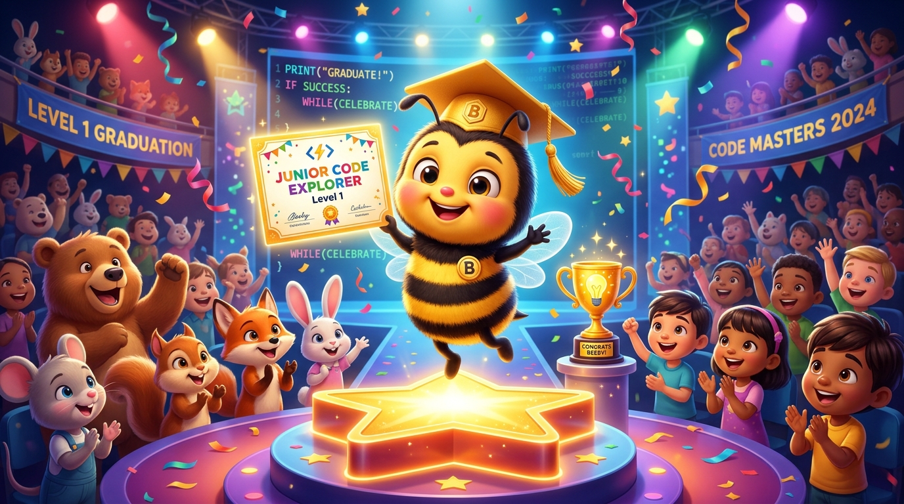

CAPSTONE LEVEL 1: Demo Day Cilik! 🎓🏆
Pameran Game Arcade Mandiri 'Bee Honey Harvest', Presentasi 2 Menit di Depan Kelas, dan Penganugerahan Sertifikat Resmi Kelulusan!

12 Langkah Hebat Menjadi Kreator Game 🌟🚀
Perjalanan luar biasa yang sudah kamu taklukkan bersama Beekoding Academy:
Sesi 01–03
Robot Manusia di lantai, menghidupkan aktor Sprite di panggung, dan event efek suara.
Sesi 04–06
Kepakan sayap loop forever, dialog bergantian dua tokoh, dan suara kecerdasan buatan AI TTS.
Sesi 07–09
Merancang hero dengan AI prompt, buku cerita digital, dan navigasi labirin panah 4 arah.
Sesi 10–12
Variabel panen skor madu, musuh laba-laba patroli, siaran game over, & Capstone Wisuda!
Anatomi Game 'Bee Honey Harvest' 🕹️🐝
Game arcade buatanmu sudah memiliki 6 teknologi koding setara game profesional:
Arena berliku dengan sensor tabrakan warna biru pekat.
Tombol panah keyboard dengan koordinat Sumbu X dan Y.
6 Bunga madu yang menghilang saat disentuh Beeby.
Pencatat poin otomatis yang direset ke 0 di awal game.
AI musuh yang meluncur mondar-mandir dengan blok Glide.
Sistem siaran Broadcast Game Over dan You Win!
Resep 4 Langkah Presentasi Cilik 🎤🌟
Hanya butuh 2 menit untuk memukau teman-teman dan guru di depan kelas:
Sebutkan nama dan umurmu:
"Halo semuanya, namaku Budi, umur 8 tahun!"
Ceritakan judul gamemu:
"Hari ini aku membuat game Bee Honey Harvest!"
Mainkan langsung di layar proyektor. Tunjukkan caramu menghindari laba-laba!
Ceritakan bagian terfavorit:
"Bagian paling seru adalah saat skor bertambah ting!"
4 Bintang Emas Kelulusan Level 1 ⭐🏆
Setiap siswa yang menuntaskan 4 indikator ini berhak lulus:
Navigasi Lancar
Beeby bergerak responsif dengan 4 tombol panah tanpa macet di tembok.
Sistem Skor Rapi
Bunga menghilang saat dipetik dan angka skor bertambah +1 secara akurat.
Musuh Patroli
Laba-laba meluncur otomatis dan tabrakan memicu siaran Game Over.
Penyelesaian Penuh
Ada layar Game Over saat kalah dan layar You Win saat memanen semua madu!
Generator Sertifikat Resmi Kelulusan 📜🎓
Ketik nama siswa dan klik tombol wisuda untuk menerbitkan piagam resmi:
Junior Code Explorer — Level 1
Diberikan dengan bangga kepada Sang Juara Koding Cilik:
Atas keberhasilan menuntaskan 12 Sesi Pemrograman Scratch 3.0 & Computational Thinking dengan karya game mandiri 'Bee Honey Harvest Arcade Game'.
Karakter Hebat Seorang Coder Cilik 🤝💖
Koding bukan hanya tentang komputer, tapi tentang saling mendukung sesama teman:
Saat teman sedang demo di depan, letakkan tangan di atas meja dan dengarkan ceritanya dengan seksama.
Berikan tepuk tangan paling bersemangat setiap kali teman selesai bermain, baik menang maupun kalah!
Sebutkan 1 hal yang paling kamu sukai dari game temanmu: "Labirinmu belokannya keren sekali!"
Apa Jurus Koding Paling Keren Menurutmu? 🤔💭
Tanyakan kepada seluruh siswa dan dengarkan jawaban mereka:
"Aku paling suka saat Beeby bisa bicara suara squeak dan pak katak bersuara giant!"
"Aku suka membuat hero lebah astronot pakai prompt mantra bahasa Inggris!"
"Aku bangga saat toples skor bertambah dan berhasil lolos dari sengatan laba-laba!"
Selamat Kepada Para Lulusan Level 1! 👑⭐
Kalian resmi menyandang gelar kompetensi perdana di Beekoding Academy:
"Junior Code Explorer Level 1"
Telah menguasai fondasi Algoritma, Computational Thinking, Scratch 3.0 Interactive Game Mechanics, & AI Integration!
Badge Master of Game Mechanics
Lencana digital yang disematkan langsung di akun profil siswa Beekoding untuk portofolio masa depan!
Tepuk Koding Akbar & Selamat Datang di Level 2! 🚀🎉
Tutup pertemuan dengan perayaan konfeti terhebat dan intipan petualangan Level 2:
🌟 Tradisi Tepuk Koding Kelulusan:
(Prok prok prok) KODING!
(Prok prok prok) BEEKODING!
(Prok prok prok) JUARA LEVEL SATU! HOREEE! 🥳
🚀 Petualangan Baru Menanti: LEVEL 2 (Sesi 13–24)
Buah-buah apel akan berjatuhan dari langit secara acak! Kita akan mengendalikan mangkuk penangkap dengan gerakan mouse!